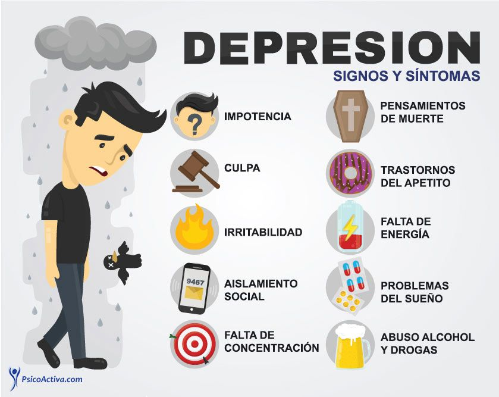

Algunas Enfermedades Mentales
A continuación encontraremos información acerca de diferentes enfermedades mentales para tener un concepto más acertado de cada una de estas:
El trastorno de ansiedad generalizada consiste en la presencia de un estado de preocupación y nerviosismo excesivos en relación con diversas actividades o acontecimientos. Las personas afectadas sufren ansiedad durante más días de los que están libres de ella durante 6 meses o más.
Los síntomas del trastorno de ansiedad generalizada pueden variar. Algunos de ellos son los siguientes:
- Preocupación o ansiedad persistentes por determinados asuntos que son desproporcionados en relación con el impacto de los acontecimientos
- Pensar demasiado los planes y las soluciones a todos los peores resultados posibles
- Percibir situaciones y acontecimientos como amenazantes, incluso cuando no lo son
- Dificultad para lidiar con situaciones de incertidumbre
- Temperamento indeciso y miedo a tomar la decisión equivocada
- Incapacidad para dejar de lado u olvidar una preocupación
- Incapacidad para relajarse, sensación de nerviosismo y sensación de excitación o de estar al límite
- Dificultad para concentrarse, o sensación de que la mente se «pone en blanco»
Consiste en la alteración cíclica y recurrente del estado del ánimo, entre episodios de depresión, de manía y mixtos. Se divide los trastornos del ánimo en depresivos y bipolares; los bipolares se clasifican en: Trastorno bipolar tipo I, Trastorno Bipolar tipo II, Trastornos Ciclotímicos y Trastornos no especificados. según DSM-5.
Aunque el trastorno bipolar es una afección de por vida, puedes controlar los cambios en el estado de ánimo y otros síntomas siguiendo un plan de tratamiento. En la mayoría de los casos, el trastorno bipolar se trata con medicamentos y apoyo psicológico (psicoterapia).
La depresión mayor es un trastorno del estado de ánimo. Se presenta cuando los sentimientos de tristeza, pérdida, ira o frustración interfieren con la vida diaria durante un largo período de tiempo. También cambia la manera en la que funciona el cuerpo.
El trastorno depresivo mayor es un episodio de depresión severo que tiende a durar entre siete y nueve meses. Un niño con depresión mayor experimenta sentimientos de tristeza y desesperanza persistentes e intensos que impactan significativamente su vida diaria y capacidad para funcionar.
Sintomas:
- Tristeza inusual, persistente incluso cuando las circunstancias cambian
- Interés reducido en actividades que disfrutaba antes; sentimientos de anticipación reducidos
- Cambios involuntarios en el peso
- Cambios en los hábitos de sueño
- Aletargamiento
- Autoevaluación severa (“Soy fea. No soy buena. Nunca tendré amigos.”)
- Pensamientos y/o intentos suicidas
El trastorno obsesivo-compulsivo (TOC) es un trastorno mental en el cual las personas tienen pensamientos, sentimientos, ideas, sensaciones (obsesiones) y comportamientos repetitivos e indeseables que los impulsan a hacer algo una y otra vez (compulsiones).
Causas:
Los proveedores de atención médica no conocen la causa exacta del TOC. Los factores que pueden influir incluyen lesiones en la cabeza, infecciones y funcionamiento anormal en ciertas zonas del cerebro. Los genes (antecedentes familiares) parecen jugar un fuerte papel. Los antecedentes de abuso físico o sexual también parecen incrementar el riesgo de TOC.